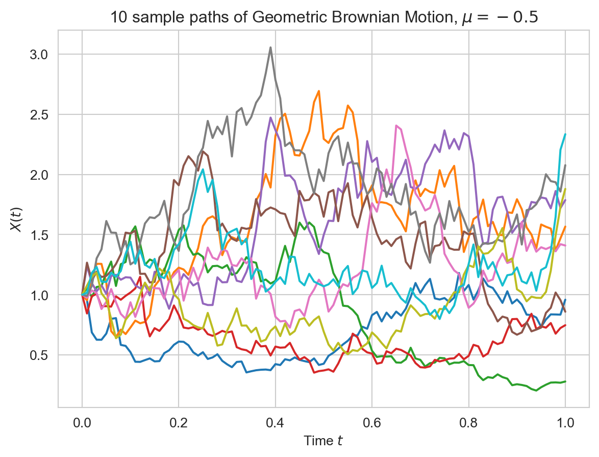
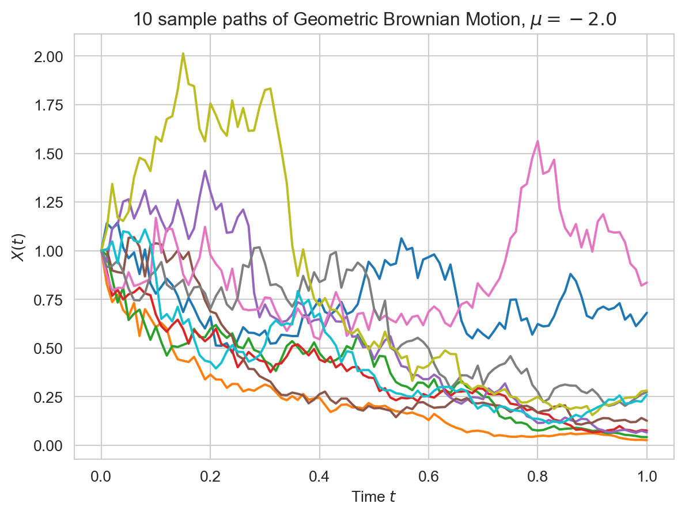
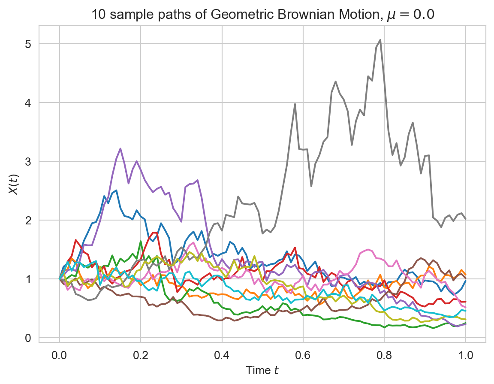
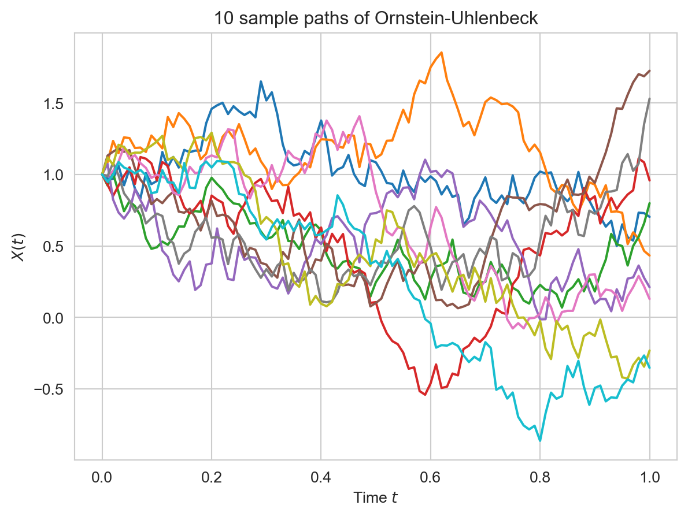
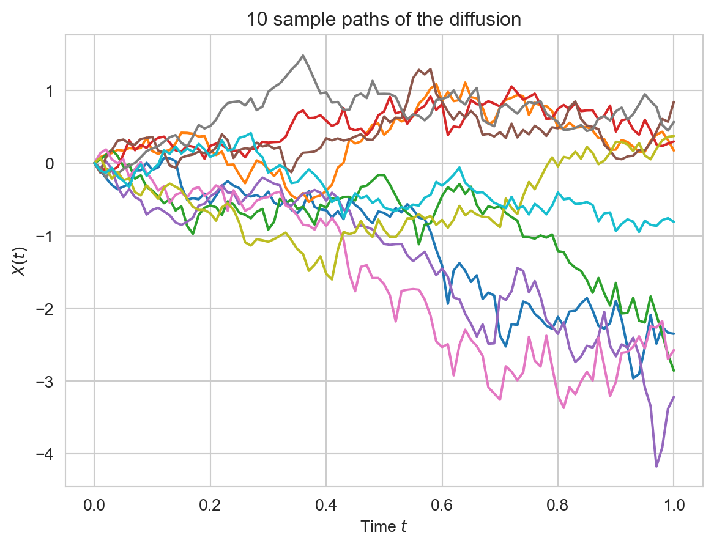

from dataclasses import dataclass
from abc import ABC, abstractmethod
from typing import Callable, Optional
import numpy as np
import matplotlib.pyplot as plt
import seaborn as sns
sns.set_style("whitegrid")
# More descriptive type hints
T = np.ndarray
X = np.ndarray
@dataclass
class SIVP:
"""
An abstraction for a stochastic initial value problem
"""
t_start : float
t_end : float
initial_condition: float
drift: Callable[[float, np.ndarray], np.ndarray]
vol: Callable[[float, np.ndarray], np.ndarray]
dvol_dx: Optional[Callable[[float, np.ndarray], np.ndarray]] = None
@dataclass
class Solver(ABC):
"""
An abstract base class for all numerical schemes
"""
num_steps: int = 100
num_paths: int = 100
def __post_init__(self):
self.iter = 0
# x_values is a matrix of shape [num_paths,num_steps]
self.x_values = np.zeros((self.num_paths, self.num_steps + 1))
self.step_size = 1.0 / self.num_steps
# gaussian increments
self.brownian_increments = np.sqrt(self.step_size) * np.random.standard_normal(
size=(self.num_paths, self.num_steps)
)
self.brownian = np.cumsum(self.brownian_increments, axis=1)
self.brownian = np.concatenate(
[np.zeros(shape=(self.num_paths, 1)), self.brownian], axis=1
)
@abstractmethod
def iterate(self, sivp: SIVP) -> X:
"""
Compute the next iterate X(n+1)
"""
def solve(self, sivp: SIVP) -> (T, X):
"""
Solve the SIVP
"""
self.x_values[:, 0] = np.full(
shape=(self.num_paths,), fill_value=sivp.initial_condition
)
while self.iter < self.num_steps:
self.x_values[:, self.iter + 1] = self.iterate(sivp)
self.iter += 1
times = np.linspace(sivp.t_start, sivp.t_end, self.num_steps + 1)
return times, self.x_values
def reset(self):
self.__post_init__()Ito Processes and Stochastic Differential Equations.
Let’s start with the definition of Ito processes.
Definition 1 (Ito Process) Let \((B(t):t\geq0)\) be a standard brownian motion defined on \((\Omega,\mathcal{F},\mathbb{P})\). An Ito process \((X(t):t\geq0)\) is of the form:
\[\begin{aligned} X(t) & =X(0)+\int_{0}^{t}V(s)dB(s)+\int_{0}^{t}D(s)ds \end{aligned} \tag{1}\]
where \((V(t),t\geq0)\) and \((D(t),t\geq0)\) are two adapted processes for which the integrals make sense in the sense of Ito and Riemann. We refer to \((V(t):t\geq0)\) as the local volatility and to \((D(t):t\geq0)\) as the local drift.
We will often denote an Ito process \((X(t):t\geq0)\) in differential form as:
\[\begin{aligned} dX(t) & =D(t)dt+V(t)dB(t) \end{aligned} \tag{2}\]
This form makes no rigorous sense; when we write it, we mean Equation 1. Nevertheless, the differential equation has two great advantages:
(1) It gives some intuition on what drives the variation of \(X(t)\). On one hand, there is a contribution of the Brownian increments which are modulated by the volatility \(V(t)\). On the other hand, there is a smoother contribution coming from the time variation which is modulated by the drift \(D(t)\).
(2) The differential notation has computational power. In particular, evaluating Ito’s formula is reduced to computing differentials, as in classical calculus, but by doing it upto the second order.
An important class of Ito processes is given by processes for which the volatility and the drift are simply functions of the position of the process.
Definition 2 Let \((B(t):t\geq0)\) be a standard Brownian motion. An Ito process \((X(t):t\geq0)\) of the form
\[\begin{aligned} dX(t) & =\mu(X(t))dt+\sigma(X(t))dB(t),\quad X(0)=x \end{aligned} \tag{3}\]
where \(\mu\) and \(\sigma\) are functions from \(\mathbf{R}\) to \(\mathbf{R}\), is called a time-homogenous diffusion.
Definition 3 An Ito-process \((Y(t),t\geq0)\) of the form:
\[\begin{aligned} {1} dY(t) & =\mu(t,X(t))dt+\sigma(t,X(t))dB(t)\quad Y(0)=y \end{aligned} \tag{4}\]
where \(\mu\) and \(\sigma\) are now functions \([0,\infty)\times\mathbf{R}\to\mathbf{R}\) is called a time-inhomogenous diffusion.
The equations above are called stochastic differential equations (SDE) of the respective process \((X(t))\) and \((Y(t))\).
In other words, a diffusion \((X(t),t\geq 0)\) is an Ito process whose local volatility \(V(t)\) and local drift \(D(t)\) at time \(t\) depend only on the position of the process at time \(t\) and possibly on the time \(t\) itself. It cannot depend on the path of the process before time \(t\) or on the explicit values of the driving Brownian motion at that time (which is not the process \(X(t)\) itself). The class of diffusions, and of the Ito processes in general, constitutes a huge collection of stochastic processes for stochastic modelling.
Note that an SDE is a generalization of ordinary differential equations or ODEs. Indeed, if there were no randomness, that is, no Brownian motion, the SDE would be reduced to
\[\begin{aligned} dX(t) & =\mu(X(t))dt \end{aligned}\]
This can be written for \(X(t)=f(t)\) as:
\[\begin{aligned} \frac{df}{dt} & =\mu(f) \end{aligned}\]
This is a first-order ordinary differential equation. It governs the deterministic evolution of the function \(X(t)=f(t)\) in time. An SDE adds a random term to this evolution that is formally written as:
\[\begin{aligned} \frac{dX}{dt} & =\mu(X(t))+\sigma(X(t))\frac{dB(t)}{dt} \end{aligned}\]
We know very well, that Brownian motion is not differentiable; hence the above is not well-defined. The ill-defined term \(dB(t)/dt\) is sometimes called white noise. However, equation Equation 3 is well-defined in the sense of the Ito process. These types of equations are well-suited to model phenomena with intrinsic randomness.
Here are some examples of diffusions:
Example 1 (Brownian Motion with a drift). If we take \(X(t)=\sigma B(t)+\mu t\) for some \(\sigma>0\) and \(\mu\in\mathbf{R}\), then we can write \(X(t)\) as:
\[\begin{aligned} X(t) & =\int_{0}^{t}\sigma dB(t)+\int_{0}^{t}\mu dt,\quad X(0)=0 \end{aligned}\]
In the differential form this becomes
\[\begin{aligned} dX(t) & =\mu dt+\sigma dB(t) \end{aligned}\]
In this case, the local drift and the local volatility are constant.
Example 2 (Geometric Brownian Motion). We consider the process \(S(t)=\exp((\mu-\sigma^{2}/2)t+\sigma B(t))\). To find the stochastic differential equation, we apply the Ito’s Lemma to
\[\begin{aligned} f(t,x) & =\exp((\mu-\sigma^{2}/2)t+\sigma x) \end{aligned}\]
We have:
\[\begin{aligned} df(t,x) & =\left((\mu-\sigma^{2}/2)+\frac{1}{2}\sigma^{2}\right)\exp((\mu-\sigma^{2}/2)t+\sigma x)dt+\sigma\exp((\mu-\sigma^{2}/2)t+\sigma x)dB(t)\\ & =\mu S(t)dt+\sigma S(t)dB(t) \end{aligned}\]
Note that the local drift and the local volatility are now proportional to the position. So, the higher \(S(t)\), the higher the volatility and drift.
Example 3 (Any smooth function of Brownian motion). Ito’s formula gurarantees that any smooth function \(f(t,B(t))\) of time and a Brownian motion is an Ito process with volatility \(V(t)=\partial_{t}f(t,B(t))\) and drift \(D(t)=\partial_{x}f(t,B(t))+\frac{1}{2}\partial_{xx}f(t,B(t))\). We will see in further ahead, that, in general, any reasonable function of an Ito process remains an Ito process.
Example 4 (An Ito process that is not a diffusion) Consider the process
\[\begin{aligned} X(t) & =\int_{0}^{t}B^{2}(s)dB(s) \end{aligned}\]
This is an Ito process with local volatility \(V(t)=B(t)^{2}\) and local drift \(D(t)=0\). However, it is not a diffusion, because the local volatility is not an explicit function of \(X(t)\).
It turns out that the Brownian bridge is a time-inhomogenous diffusion and that the Ornstein-Uhlenbeck process is a time-homogenous diffusion. To understand these examples, we need to extend Ito’s formula to Ito processes.
Ito’s Formula.
The first step towards a general Ito’s formula is the quadratic variation of an Ito process.
Proposition 1 (Quadratic variation of an Ito process.) Let \((B(t),t\geq0)\) be a standard Brownian motion and \((X(t):t\geq0)\) be an Ito process of the form \(dX(t)=V(t)dB(t)+D(t)dt\). Then, the quadratic variation of the process \((X(t):t\geq0)\) is:*
\[\begin{aligned} <X,X>_{t} & =\lim_{n\to\infty}\sum_{j=0}^{n-1}(X(t_{j+1})-X(t_{j}))^{2}=\int_{0}^{t}V(s)^{2}ds \end{aligned} \tag{5}\]
for any partition \((t_{j},j\leq n)\) of \([0,t]\), where the limit is in probability.
Remark 1. Note that the quadratic variation is increasing in \(t\), but it is not deterministic in general! \(V_t\) is a random variable. The quadratic variation is a smooth stochastic process. (It is differentiable) Observe that we recover the quadratic variation for the Brownian motion for \(V(t)=1\) as expected. We also notice that the formula follows easily from the rules of Ito Calculus, thereby showing the consistency of the theory. Indeed we have:
\[\begin{aligned} d<X,X>_{t} & =(dX(t))^{2}=(V(t)dB(t)+D(t)dt)^{2}\\ & =V(t)^{2}(dB(t))^{2}+2V(t)D(t)dB(t)\cdot dt+D^{2}(t)(dt)^{2}\\ & =V(t)^{2}dt \end{aligned}\]
Proof. Proof. The proof is involved, but it reviews some important concepts of stochastic calculus. We prove the case when the process \(V\) is in \(\mathcal{L}_{c}^{2}(T)\) for some \(T>0\). We write \(I(t)=\int_{0}^{t}V(s)dB(s)\) and \(R(t)=\int_{0}^{t}D(s)ds\). We first show that only the Ito integral contributes to the quadratic variation and the Riemann integral does not contribute, so that:
\[\begin{aligned} <X,X>_{t} & =<I,I>_{t} \end{aligned} \tag{6}\]
We have that the increment square of \(X(t)\) is:
\[\begin{aligned} (X(t_{j+1})-X(t_{j}))^{2} & =(I(t_{j+1})-I(t_{j}))^{2}+2(I(t_{j+1})-I(t_{j}))(R(t_{j+1})-R(t_{j}))+(R(t_{j+1})-R(t_{j}))^{2} \end{aligned}\]
The Cauchy-Schwarz inequality implies :
\[\begin{aligned} \sum_{j=0}^{n-1}(I(t_{j+1})-I(t_{j}))(R(t_{j+1})-R(t_{j})) & \leq\left(\sum_{j=0}^{n-1}(I(t_{j+1})-I(t_{j}))^{2}\right)^{1/2}\left(\sum_{j=0}^{n-1}(R(t_{j+1})-R(t_{j}))^{2}\right)^{1/2} \end{aligned}\]
Therefore, to prove equation Equation 5, it suffices to show that \(\sum_{j=0}^{n-1}(R(t_{j+1})-R(t_{j}))^{2}\to 0\) almost surely. Since \(D(s)\) is an almost surely continuous process, the stochastic process \(R(t)=\int_{0}^{t}D(s)ds\) has continuous paths with probability \(1\). Therefore:
\[\begin{aligned} \sum_{j=0}^{n-1}(R(t_{j+1})-R(t_{j}))^{2} & =\max_{1\leq j\leq n}|R(t_{j+1})-R(t_{j})|\sum_{j=0}^{n-1}(R(t_{j+1})-R(t_{j})) \end{aligned}\]
Since, \(R(t)\) is continuous on the compact set \([0,t]\), it is uniformly continuous a.s. So, as \(|t_{j+1}-t_{j}|\to 0\), by uniform continuity it follows that \(\max|R(t_{j+1})-R(t_{j})|\to 0\) a.s.
It remains to prove that \(<I,I>_{t}=\int_{0}^{t}V(s)^{2}ds\). We first prove the case when \(V\in\mathcal{S}(T)\) is a simple adapted process. Consider a partition \((t_{j}:j\leq n)\) of \([0,t]\). Without loss of generality, we can suppose that \(V\) is constant on each \([t_{j},t_{j+1})\) by refining the partition. We then have:
\[\begin{aligned} \sum_{j=0}^{n-1}(I(t_{j+1})-I(t_{j}))^{2} & =\sum_{j=0}^{n-1}V(t_{j})^{2}(B(t_{j+1})-B(t_{j}))^{2} \end{aligned}\]
Now, we have seen in the proof of Ito’s formula that \(\mathbb{E}\left[\left\{ \sum_{j=0}^{n-1}V(t_{j})^{2}((B(t_{j+1})-B(t_{j}))^{2}-(t_{j+1}-t_{j})\right\} ^{2}\right]\to 0\), so \(\sum_{j=0}^{n-1}V(t_{j})^{2}(B(t_{j+1})-B(t_{j}))^{2}\) approaches \(\sum_{j=0}^{n-1}V(t_{j})^{2}(t_{j+1}-t_{j})\) in the mean square sense. As the mesh size becomes finer, the \(L^{2}\)-limit is \(\int_{0}^{t}V(t)^{2}dt\).
The case \(V\in\mathcal{L}_{c}^{2}(T)\) is proved by approximating \(V\) by a simple process in \(\mathcal{S}(T)\). More precisely, we can find a simple process \(V^{(\epsilon)}(t)\) that is \(\epsilon\)-close to \(V\) in the sense:
\[\begin{aligned} ||I^{(\epsilon)}-I|| & =||\int V^{\epsilon}dB(t)-\int VdB(t)||=\int_{0}^{t}\mathbb{E}[(V^{(\epsilon)}(t)-V(t))^{2}]ds<\epsilon \end{aligned} \tag{7}\]
To prove the claim, we need to show that for \(t\leq T\),
\[\begin{aligned} \mathbb{E}\left[\left|\sum_{j=0}^{n-1}(I(t_{j+1})-I(t_{j}))^{2}-\int_{0}^{t}(V(s))^{2}ds\right|\right] & \to0\quad\text{as }\quad n\to\infty \end{aligned}\]
\(L^{1}\)-convergence implies convergence in probability of the sequence \(\sum_{j=0}^{n-1}(I(t_{j+1})-I(t_{j}))^{2}\). We now introduce the \(V^{(\epsilon)}(t)\) approximation inside the absolute value as well as its corresponding integral \(I^{(\epsilon)}(t)=\int_{0}^{t}V^{(\epsilon)}(s)ds\). By the triangle inequality, we have:
\[\begin{aligned} & \mathbb{E}\left[\left|\sum_{j=0}^{n-1}(I(t_{j+1})-I(t_{j}))^{2}-\int_{0}^{t}(V(s))^{2}ds\right|\right]\nonumber \\ = & \mathbb{E}\left[\Biggl|\sum_{j=0}^{n-1}(I(t_{j+1})-I(t_{j}))^{2}-(I^{(\epsilon)}(t_{j+1})-I^{(\epsilon)}(t_{j}))^{2}+(I^{(\epsilon)}(t_{j+1})-I^{(\epsilon)}(t_{j}))^{2}-\int_{0}^{t}(V^{(\epsilon)}(s))^{2}ds\right.\nonumber \\ & +\int_{0}^{t}(V^{(\epsilon)}(s))^{2}ds-\int_{0}^{t}(V(s))^{2}ds\Biggr|\Biggr]\nonumber \\ \leq & \mathbb{E}\left[\left|\sum_{j=0}^{n-1}(I(t_{j+1})-I(t_{j}))^{2}-(I^{(\epsilon)}(t_{j+1})-I^{(\epsilon)}(t_{j}))^{2}\right|\right]+\mathbb{E}\left[\left|\sum_{j=0}^{n-1}(I^{(\epsilon)}(t_{j+1})-I^{(\epsilon)}(t_{j}))^{2}-\int_{0}^{t}(V^{(\epsilon)}(s))^{2}ds\right|\right]\\ & +\mathbb{E}\left[\Biggl|\int_{0}^{t}(V^{(\epsilon)}(s))^{2}ds-\int_{0}^{t}(V(s))^{2}ds\Biggr|\right]\nonumber \end{aligned} \tag{8}\]
We show that the first and third terms converge uniformly and that the second term goes to \(0\) as \(n\to\infty\).
The second term goes to \(0\) as \(n\to\infty\) by the argument for simple processes.
\(<I^{(\epsilon)},I^{(\epsilon)}>_{t}=\int_{0}^{t}V^{(\epsilon)}(s)^{2}ds\).
For the third term, the linearity of the integral and the Cauchy Schwarz inequality (applied to \(\mathbb{E}\int_{0}^{t}\)) imply that it is:
\[\begin{aligned} \mathbb{E}\left[\Biggl|\int_{0}^{t}(V^{(\epsilon)}(s))^{2}ds-\int_{0}^{t}(V(s))^{2}ds\Biggr|\right] & \leq\mathbb{E}\left[\Biggl|\int_{0}^{t}(V^{(\epsilon)}(s)-V(s))^{2}ds\Biggr|\right]^{1/2}\mathbb{E}\left[\Biggl|\int_{0}^{t}(V^{(\epsilon)}(s)+V(s))^{2}ds\Biggr|\right]^{1/2} \end{aligned}\]
The first factor is smaller than the square root of \(\epsilon\) by Equation 7, whereas the second factor is bounded.
The first term in equation Equation 8 is handled similarly. The linearity of the Ito integral and the Cauchy-Schwarz inequality applied to \(\mathbb{E}\left[\sum_{j=0}^{n-1}\left(\int_{t_{j}}^{t_{j+1}}\cdot\right)\right]\) give that the first term is:
\[\begin{aligned} & \mathbb{E}\left[\left|\sum_{j=0}^{n-1}\int_{t_{j}}^{t_{j+1}}(V(s))^{2}dB(s)-\int_{t_{j}}^{t_{j+1}}(V^{\epsilon}(s))^{2}dB(s)\right|\right]\\ = & \mathbb{E}\left[\left|\sum_{j=0}^{n-1}\int_{t_{j}}^{t_{j+1}}(V(s)-V^{\epsilon}(s))dB(s)\int_{t_{j}}^{t_{j+1}}(V(s)+V^{\epsilon}(s))dB(s)\right|\right]\\ \leq & \mathbb{E}\left[\sum_{j=0}^{n-1}\left(\int_{t_{j}}^{t_{j+1}}(V(s)-V^{\epsilon}(s))dB(s)\right)^{2}\right]^{1/2}\mathbb{E}\left[\Biggl|\sum_{j=0}^{n-1}\left(\int_{t_{j}}^{t_{j+1}}(V(s)+V^{\epsilon}(s))dB(s)\right)^{2}\Biggr|\right]^{1/2} \end{aligned}\]
By Ito isometry, the first factor in the above expression can be simplified:
\[\begin{aligned} \mathbb{E}\left[\sum_{j=0}^{n-1}\left(\int_{t_{j}}^{t_{j+1}}(V(s)-V^{\epsilon}(s))dB(s)\right)^{2}\right]^{1/2} & =\sum_{j=0}^{n-1}\mathbb{E}\left(\int_{t_{j}}^{t_{j+1}}(V(s)-V^{\epsilon}(s))dB(s)\right)^{2}\\ & =\sum_{j=0}^{n-1}\int_{t_{j}}^{t_{j+1}}\mathbb{E}[(V(s)-V^{\epsilon}(s))^{2}]ds \end{aligned}\]
By Equation 7, this factor is smaller than \(\epsilon\). The second factor equals \(\sum_{j=0}^{n-1}\int_{t_{j}}^{t_{j+1}}\mathbb{E}[(V(s)+V^{\epsilon}(s))^{2}]ds\) by Ito-isometry and is uniformly bounded. This concludes the proof of the proposition. \(\blacksquare\)
Note that quadratic variation \(<I,I>_{t}=\int(V(s))^{2}ds\) is computed path-by-path and hence the result is random. On the other the variance of the Ito integral \(Var(I(t))=\mathbb{E}[I_{t}^{2}]=\int\mathbb{E}[V_{s}^{2}]ds\) is the mean value of all possible paths of the quadratic variation and hence is non-random. We are now ready to state Ito’s formula for Ito processes. We write the result in differential form for conciseness.
Theorem 1 (Ito’s formula for Ito processes) Let \((B(t):t\geq0)\) be a standard brownian motion, and let \((X(t):t\geq0)\) be an Ito process of the form \(dX(t)=V(t)dB(t)+D(t)dt\). Consider a function \(f(t,x)\in\mathcal{C}^{1,2}([0,T]\times\mathbf{R})\). Then we have with probability one for all \(t\leq T\):*
\[\begin{aligned} df(t,X(t)) & =\partial_{x}f(t,X(t))dX(t)+\partial_{t}f(t,X(t))dt+\frac{1}{2}\partial_{xx}f(t,X(t))d<X,X>_{t} \end{aligned}\]
This can also be written as:
\[\begin{aligned} df(t,X(t))= & \partial_{x}f(t,X(t))V(t)dB(t)+\left[\partial_{x}f(t,X(t))D(t)+\partial_{t}f(t,X(t))+\frac{1}{2}(V(t))^{2}\partial_{xx}f(t,X(t))\right]dt \end{aligned}\]
The proof of the Theorem 1 is again a Taylor approximation with the form of the quadratic variation of the process. We will omit it.
Example 5 (Ornstein-Uhlenbeck Process). Consider the Ornstein-Uhlenbeck process \((Y(t):t\geq0)\):
\[\begin{aligned} Y(t) & =Y(0)e^{-t}+e^{-t}\int_{0}^{t}e^{s}dB(s) \end{aligned}\]
Note that this process is an explicit function of \(t\) and of the Ito process \(X(t)=Y(0)+\int_{0}^{t}e^{s}dB(s)\). Indeed, we have:
\[\begin{aligned} Y(t) & =e^{-t}X(t) \end{aligned}\]
Let \(f(t,x)=e^{-t}x\). Then, \(f_{x}(t,x)=e^{-t}\), \(f_{xx}(t,x)=0\) and \(f_{t}(t,x)=-e^{-t}x\). So, by Ito’s lemma,
\[\begin{aligned} df(t,x) & =f_{t}(t,X(t))dt+f_{x}(t,X(t))dX(t)+\frac{1}{2}f_{xx}(t,X(t))d<X,X>_{t}\nonumber \\ dY(t) & =-Y(t)dt+e^{-t}dX(t)\nonumber \\ dY(t) & =-Y(t)dt+e^{-t}(e^{t}dB(t))\nonumber \\ dY(t) & =-Y(t)dt+dB(t) \end{aligned} \tag{9}\]
This is the SDE for the Ornstein Uhlenbeck process.
The SDE has a very nice interpretation: The drift is positive if \(Y(t)<0\) and negative if \(Y(t)>0\). Moreover, the drift is proportional to the position (exactly like a spring pulling the process back to the \(x\)-axis following the Hooke’s law!). This is the mechanism that ensures that the process does not venture too far from \(0\) and is eventually stationary.
The SDE Equation 9 is now easily generalized by adding two parameters for the volatility and the drift:
\[\begin{aligned} dY(t) & =-kY(t)dt+\sigma dB(t),\quad k\in\mathbf{R},\sigma>0 \end{aligned} \tag{10}\]
It is not hard to check that the solution to the SDE is:
\[\begin{aligned} Y(t) & =Y(0)e^{-kt}+e^{-kt}\int_{0}^{t}e^{ks}\sigma dB(s) \end{aligned} \tag{11}\]
Exercise 1 The Ornstein-Uhlenbeck process with parameters. Use the Ito’s formula to show that the Equation 11 is the solution to the Ornstein-Uhlenbeck SDE Equation 10.
Solution.
Let \(X(t)=Y(0)+\int_{0}^{t}e^{ks}\sigma dB(s)\), so \(dX(t)=e^{kt}\sigma dB(t)\). Then, \(Y(t)=e^{-kt}X(t)\). Let \(f(t,x)=e^{-kt}x\). Then, by Ito’s formula:
\[\begin{aligned} df(t,x) & =-ke^{-kt}X(t)dt+e^{-kt}dX(t)\\ dY(t) & =-kY(t)dt+e^{-kt}e^{kt}\sigma dB(t)\\ dY(t) & =-kY(t)dt+\sigma dB(t) \end{aligned}\]
The latest version of Ito’s formula is another useful tool for producing martingales from a function of an Ito process. We start with two examples generalizing martingales for Brownian motion.
Example 6 (A generalization of \((B(t))^{2}-t\)). Let \((V(t):t\leq T)\) be a process in \(\mathcal{L}_{c}^{2}(T)\). Consider an Ito process \((X(t):t\leq T)\) given by \(dX(t)=V(t)dB(t)\). Note that \(((X(t))^{2}:t\leq T)\) is a submartingale by Jensen’s inequality, since \(\mathbb{E}[X^{2}(t)|\mathcal{F}_{s}]\geq(\mathbb{E}[X(t)|\mathcal{F}_{s})^{2}=X^{2}(s)\). We show that the compensated process
\[\begin{aligned} M(t) & =X^{2}(t)-\int_{0}^{t}V^{2}(s)ds,\quad t\leq T \end{aligned}\]
is a martingale for the Brownian filtration. (This is another instance of the Doob-Meyer decomposition). By the Ito’s formula for \(f(x)=x^{2}\), we have:
\[\begin{aligned} df(x) & =f_{x}(X(t)dX(t)+\frac{1}{2}f_{xx}(X(t))d<X,X>_{t}\\ & =2X(t)dX(t)+(V(t))^{2}dt\\ df(X(t)) & =2X(t)V(t)dB(t)+(V(t))^{2}dt \end{aligned}\]
In Integral form this implies:
\[\begin{aligned} (X(t))^{2} & =(X(0))^{2}+2\int_{0}^{t}X(s)V(s)dB(s)+\int_{0}^{t}(V(s))^{2}ds\\ M(t)=(X(t))^{2}-\int_{0}^{t}(V(s))^{2}ds & =(X(0))^{2}+2\int_{0}^{t}X(s)V(s)dB(s) \end{aligned}\]
We conclude that \((M(t):t\leq T)\) is a martingale, provided \(X(t)V(t)\in L_{c}^{2}(T)\).
There is another more direct way to prove that \((M(t):t\leq T)\) is a martingale whenever \((V(t):t\leq T)\in\mathcal{L}_{c}^{2}(T)\). This is by using increments: for \(t'<t\leq T\),
\[\begin{aligned} \mathbb{E}[X_{t'}^{2}|\mathcal{F}_{t}] & =\mathbb{E}[(X_{t}+(X_{t'}-X_{t}))^{2}|\mathcal{F}_{t}]\\ & =\mathbb{E}[X_{t}^{2}+2X_{t}(X_{t'}-X_{t})+(X_{t'}-X_{t})^{2}|\mathcal{F}_{t}]\\ & =X_{t}^{2}+2X_{t}\mathbb{E}[X_{t'}-X_{t}|\mathcal{F}_{t}]+\mathbb{E}[(X_{t'}-X_{t})^{2}|\mathcal{F}_{t}] \end{aligned}\]
Since \((X_{t}:t\geq0)\) is a martingale, \(\mathbb{E}[(X_{t'}-X_{t})|M_{t}]=0\), so the middle term equals zero and we are left with:
\[\begin{aligned} \mathbb{E}[X_{t'}^{2}|\mathcal{F}_{t}] & =X_{t}^{2}+\mathbb{E}[(X_{t'}-X_{t})^{2}|\mathcal{F}_{t}] \end{aligned}\]
By conditional Ito Isometry,
\[\begin{aligned} \mathbb{E}[(X_{t'}-X_{t})^{2}|\mathcal{F}_{t}] & =\int_{0}^{t'}V_{s}^{2}ds-\int_{0}^{t}V_{s}^{2}ds=\int_{t}^{t'}V_{s}^{2}ds \end{aligned}\]
Example 7 (A generalization of the geometric Brownian motion). Let \(\sigma(t)\) be a continuous, deterministic function such that \(|\sigma(t)|\leq1\), \(t\in[0,T]\). The process
\[\begin{aligned} M(t) & =\exp\left(\int_{0}^{t}\sigma(s)dB(s)-\frac{1}{2}\int_{0}^{t}\sigma^{2}(s)ds\right),\quad t\leq T \end{aligned}\]
is a martingale for the Brownian filtration. To see this, note that we can write \(M(t)=f(t,X(t))\) where \(f(t,x)=\exp(x-\frac{1}{2}\int\sigma^{2}(s)ds)\) and \(X(t)=\int_{0}^{t}\sigma(s)dB(s)\), so \(dX(t)=\sigma(t)dB(t)\). Ito’s formula gives:
\[\begin{aligned} df(t,x) & =f_{t}(t,X(t)dt+f_{x}(t,X(t))dX(t)+\frac{1}{2}f_{xx}(t,X(t))d<X,X>_{t}\\ dM(t) & =-\frac{1}{2}\sigma^{2}(t)M(t)dt+M(t)\sigma(t)dB(t)+\frac{1}{2}M(t)\sigma^{2}(t)dt\\ & =M(t)\sigma(t)dB(t)\\ M(t) & =M(0)+\int_{0}^{t}M(s)\sigma(s)dB(s) \end{aligned}\]
Observe also that:
\[\begin{aligned} \mathbb{E}[M_{t}^{2}] & =e^{-\int_{0}^{t}\sigma^{2}(s)ds}\mathbb{E}[e^{2\int_{0}^{t}\sigma(s)dB(s)}]=e^{\int_{0}^{t}\sigma^{2}(s)ds} \end{aligned}\]
since \(\int_{0}^{t}\sigma(s)dB(s)\) is a Gaussian random variable with mean \(0\) and variance \(\int_{0}^{t}\sigma^{2}(s)ds\).
We conclude from the equation that \((M(t),t\geq0)\) is a martingale.
Example 8 (Martingales of Geometric Brownian Motion). Let
\[\begin{aligned} S(t) & =S(0)\exp(\sigma B(t)-\sigma^{2}t/2) \end{aligned}\]
be a geometric brownian motion. We find a PDE satisfied by \(f(t,x)\) for \(f(t,S(t))\) to be a martingale. It suffices to apply Ito’s formula of Theorem 1. We get:
\[\begin{aligned} df(t,S(t)) & =f_{t}(t,S(t))dt+f_{x}(t,S(t))dS(t)+\frac{1}{2}f_{xx}(t,S(t))dS(t)\cdot dS(t) \end{aligned}\]
Now note from the earlier result that \(dS(t)=S(t)\sigma dB(t)\). So, \(dS(t)\cdot dS(t)=\frac{1}{2}\sigma^{2}(S(t))^{2}dt\). So,
\[\begin{aligned} df(t,S(t)) & =\left\{ \frac{\partial f}{\partial t}+\frac{1}{2}\sigma^{2}(S(t))^{2}\frac{\partial^{2}f}{\partial x^{2}}\right\} dt+\sigma S(t)\frac{\partial f}{\partial x}dB(t) \end{aligned}\]
Finally, the PDE for \(f(t,x)\) is obtained by setting the factor in front of \(dt\) to \(0\), because we want \(f\) to be a martingale process. It is important to keep in mind, that the PDE should always be written in terms of the time variable \(t\) and the space variable \(x\). Therefore, the PDE of \(f\) as a function of time and space is:
\[\begin{aligned} \frac{1}{2}\sigma^{2}x^{2}\frac{\partial^{2}f}{\partial x^{2}}(t,x)+\frac{\partial f}{\partial t}(t,x) & =0 \end{aligned}\]
No more randomness appears in the PDE!
Here is a specific case where we can apply the Ito’s formula to construct martingales of Ito processes.
Example 9 Consider the process given by the SDE:
\[\begin{aligned} dX(t) & =X(t)dB(t),\quad X(0)=2 \end{aligned}\]
Let’s find a PDE for which \(f(t,X(t))\) is a martingale for the Brownian filtration. We have by Ito’s formula that:
\[\begin{aligned} df(t,X(t)) & =f_{t}(t,X(t))dt+f_{x}(t,X(t))dX(t)+\frac{1}{2}f_{xx}(t,X(t))d<X,X>_{t}\\ & =\left(\frac{\partial f}{\partial t}+\frac{1}{2}(X(t))^{2}\frac{\partial^{2}f}{\partial x^{2}}\right)dt+X(t)\frac{\partial f}{\partial x}dB(t) \end{aligned}\]
Setting the drift term to \(0\) gives the PDE:
\[\begin{aligned} \frac{\partial f}{\partial t}+\frac{1}{2}x^{2}\frac{\partial^{2}f}{\partial x^{2}} & =0 \end{aligned}\]
It is then easy to check that \(X(t)\) is a martingale and so is \(t+\log(X(t))^{2}\), since the functions \(f(t,x)=x\) and \(f(t,x)=t+\log x^{2}\) satisfy the PDE. However, the process \(tX(t)\) is not, as the function \(f(t,x)=xt\) is not a solution of the PDE.
Multivariate Extension.
Ito’s formula can be generalized to several Ito processes. Let’s start by stating an example of a function of two Ito processes. Such a function \(f(x_{1},x_{2})\) will be a function of two space variables. Not surprisingly, it needs to have two derivatives in each variable and they need to be a continuous function; we need \(f\in\mathcal{C}^{2\times2}(\mathbf{R}\times\mathbf{R})\).
Theorem 2 (Ito’s formula for many Ito processes) Let \((X(t):t\geq0)\) and (Y(t):t)$ be two Ito processes of the form:
\[\begin{aligned} dX(t) & =V(t)dB(t)+D(t)dt\nonumber \\ dY(t) & =U(t)dB(t)+R(t)dt \end{aligned} \tag{12}\]
where \((B(t):t\geq0)\) is a standard Brownian motion. Then, for \(f\in\mathcal{C}^{2\times2}(\mathbf{R}\times\mathbf{R})\), we have:
\[\begin{aligned} df(X(t),Y(t)) & =f_{x}(X(t),Y(t))dX(t)+f_{y}(X(t),Y(t))dY(t)+\frac{1}{2}f_{xx}(X(t),Y(t))d<X,X>_{t}\\ & +f_{xy}(X(t),Y(t))d<X,Y>_{t}+\frac{1}{2}f_{yy}(X(t),Y(t))d<Y,Y>_{t} \end{aligned}\]
The idea of the proof is the same as in Theorem 1 : Taylor’s expansion and quadratic variation, together with the cross-variation of two processes.
\[\begin{aligned} dX(t)\cdot dY(t) & =(V(t)dB(t)+D(t)dt)(U(t)dB(t)+R(t)dt)\\ & =U(t)V(t)dt \end{aligned}\]
Example 10 (Product Rule) An important example of this formula is Ito’s product rule. Let \(X(t)\) and \(Y(t)\) be as in Equation 12. Then:
\[\begin{aligned} d(X(t)Y(t)) & =Y(t)dX(t)+X(t)dY(t)+dX(t)\cdot dY(t) \end{aligned}\]
Exercise 2 Let \((\Omega,\mathcal{F},\mathbb{P})\) be a probability space and let \((B_{t}:t\geq0)\) be a standard brownian motion. Using integration by parts, show that
\[\begin{aligned} \int_{0}^{t}B(s)ds & =\int_{0}^{t}(t-s)dB(s) \end{aligned}\]
and prove that \(\int_{0}^{t}B(s)ds\sim\mathcal{N}(0,t^{3}/3)\).
Is
\[\begin{aligned} X(t) & =\begin{cases} 0 & t=0\\ \frac{\sqrt{3}}{t}\int_{0}^{t}B(s)ds & t>0 \end{cases} \end{aligned}\]
a standard Wiener process?
Solution.
Clearly, \(B(s,\omega)\) is a random variable and the Riemann integral \(\int_0^t B(s,\omega)ds\) depends on the sample path \(\omega\). So, \((\int_0^t B_s ds, t\leq T)\) is a stochastic process. Using integration by parts:
\[\begin{aligned} \int u\left(\frac{dv}{ds}\right)ds & =uv-\int v\left(\frac{du}{ds}\right)ds \end{aligned}\]
We set \(u=B(s)\) and \(dv/ds=1\). Then:
\[\begin{aligned} \int_{0}^{t}B(s)ds & =sB(s)|_{0}^{t}-\int_{0}^{t}sdB(s)\\ & =tB(t)-\int_{0}^{t}sdB(s)\\ & =\int_{s=0}^{s=t}tdB(s)-\int_{0}^{t}sdB(s)\\ & =\int_{0}^{t}(t-s)dB(s) \end{aligned}\]
Thus, \(\int_{0}^{t}B(s)ds\) is a Gaussian random variable with:
\[\begin{aligned} \mathbb{E}\left[\int_{0}^{t}B(s)ds\right] & =\mathbb{E}\left[\int_{0}^{t}(t-s)dB(s)\right]\\ & =0 \end{aligned}\]
and
\[\begin{aligned} \mathbb{E}\left[\left(\int_{0}^{t}B(s)ds\right)^{2}\right] & =\int_{0}^{t}(t-s)^{2}ds\\ & =\left.\frac{(t-s)^{3}}{-3}\right|_{0}^{t}\\ & =\frac{t^{3}}{3} \end{aligned}\]
Thus, using the properties of Ito Integral, \(\int_{0}^{t}B(s)ds=\int_{0}^{t}(t-s)dB(s)\) is a martingale. Now the quadratic variation \(<M,M>_{t}=0\), and this can be a bit tricky. Remember, \(\left\langle \int_{0}^{t}f(s,B_{s})dB(s),\int_{0}^{t}f(s,B_{s})dB(s)\right\rangle =\int_{0}^{t}f^{2}(s,B_{s})ds\) if and only if \(f\) is a function of the time \(s\) and the position of the Brownian motion \(B(s)\). Since, \(f\) is a function of \(t\) as well, this rule cannot be applied.
By first principles, we can show that, the quadratic variation is indeed \(0\): \[\begin{aligned} \lim_{n\to\infty}\mathbb{E}\left[\sum_{j=0}^{n-1}\left(I(t_{j+1})-I(t_{j})\right)^{2}\right] & =\lim_{n\to\infty}\mathbb{E}\left[\sum_{j=0}^{n-1}B_{t_{j}}^{2}(t_{j+1}-t_{j})^{2}\right]\\ & =\lim_{n\to\infty}\max_{1\leq j\leq n}|t_{j+1}-t_{j}|\cdot\mathbb{E}\left[\sum_{j=0}^{n-1}B_{t_{j}}^{2}(t_{j+1}-t_{j})\right] \end{aligned}\]
Since the paths of \(B_{t}\) are continuous, so are the paths \(B_{t}^{2}\) on the compact interval \([0,t]\). So, \((B_{s}^{2},s\in[0,t])\) is uniformly bounded. Thus, the expectation term is bounded. As \(n\to\infty\), the mesh size approaches zero, and consequently the quadratic variation approaches zero.
Example 11 Let \(X_{t}=\int_{0}^{t}B_{s}dB_{s}\) and \(Y_{t}=\int_{0}^{t}B_{s}^{2}dB_{s}\). Is \((X_{t}Y_{t},t\geq0)\) a martingale?
Solution.
By Ito’s product rule, we have:
\[\begin{aligned} d(X_{t}Y_{t}) & =X_{t}dY_{t}+Y_{t}dX_{t}+dX_{t}\cdot dY_{t}\\ & =X_{t}B_{s}^{2}dB_{s}+Y_{t}B_{s}dB_{s}+(B_{s}dB_{s})\cdot(B_{s}^{2}dB_{s})\\ & =X_{t}B_{s}^{2}dB_{s}+Y_{t}B_{s}dB_{s}+B_{s}^{3}dt\\ X_{t}Y_{t} & =X_{0}Y_{0}+\int_{0}^{t}X_{t}B_{s}^{2}dB_{s}+\int_{0}^{t}Y_{t}B_{s}dB_{s}+\int_{0}^{t}B_{s}^{3}dt \end{aligned}\]
The term in \(dt\) is not zero, so the product cannot be a martingale.
Example 12 (A generalization of Geometric Brownian Motion). Consider \((\int_{0}^{t}V_{s}dB_{s},t\geq0)\) an Ito process. Define the positive process:
\[\begin{aligned} M_{t} & =\exp\left(\int_{0}^{t}V_{s}dB_{s}-\frac{1}{2}\int_{0}^{t}V_{s}^{2}ds\right),\quad t\geq0 \end{aligned} \tag{13}\]
Solution.
Ito’s formula applied to the processes \(X_{t}=\int_{0}^{t}V_{s}dB_{s}\) and \(Y_{t}=\frac{1}{2}\int_{0}^{t}V_{s}^{2}ds\) with the function \(f(x,y)=e^{x-y}\) yields:
\[\begin{aligned} df(x,y) & =f_{x}(X_{t},Y_{t})dX_{t}+f_{y}(X_{t},Y_{t})dY_{t}\\ & +\frac{1}{2}f_{xx}(X_{t},Y_{t})dX_{t}\cdot dX_{t}+\frac{1}{2}f_{yy}(X_{t},Y_{t})dY_{t}\cdot dY_{t}\\ & +f_{xy}(X_{t},Y_{t})dX_{t}\cdot dY_{t} \end{aligned}\]
Now, all first and second order derivatives are \(\partial_{x}(e^{x-y})=M_{t}\), \(\partial_{y}(e^{x-y})=-e^{x-y}=-M_{t}\), \(\partial_{xx}(e^{x-y})=M_{t}\)
\(dX_{t}=V_{t}dB_{t}\). \(dY_{t}=\frac{1}{2}V_{t}^{2}dt\).
\(dX_{t}\cdot dX_{t}=V_{t}^{2}dt\), \(dX_{t}\cdot dY_{t}=0\),
\(dY_{t}\cdot dY_{t}=0\).
Consequently, we have:
\[\begin{aligned} dM_{t} & =M_{t}V_{t}dB_{t}-\frac{1}{2}M_{t}V_{t}^{2}dt\\ & +\frac{1}{2}M_{t}V_{t}^{2}dt\\ & =M_{t}V_{t}dB_{t} \end{aligned}\]
Thus, \((M_{t},t\geq0)\) is a martingale.
Exercise 3 (Generalized Ito Integral). Let \((\Omega,\mathcal{F},\mathbb{P})\) be a probability space and let \((B_{t}:t\geq0)\) be a standard brownian motion. Given that \(f\) is a simple process, show that:
\[\begin{aligned} \int_{0}^{t}f(s,B_{s})dB_{s} & =B_{t}f(t,B_{t})-\int_{0}^{t}\left[B_{s}\frac{\partial f}{\partial t}+\frac{\partial f}{\partial x}+\frac{1}{2}B_{s}\frac{\partial^{2}f}{\partial x^{2}}\right]ds\\ & -\int_{0}^{t}B_{s}\frac{\partial f}{\partial x}dB_{s} \end{aligned}\]
and
\[\begin{aligned} \int_{0}^{t}f(s,B_{s})ds & =tf(t,B_{t})-\int_{0}^{t}s\left[\frac{\partial f}{\partial t}+\frac{1}{2}\frac{\partial^{2}f}{\partial x^{2}}\right]ds-\int_{0}^{t}s\frac{\partial f}{\partial x}dB_{s} \end{aligned}\]
Solution.
I suppress \((t,B_{t})\) for simplicity. Applying the product rule to \(B_{t}f\), we get:
\[\begin{aligned} d(B_{t}f) & =fdB_{t}+B_{t}df+dB_{t}\cdot df\\ & =fdB_{t}+B_{t}\left(\frac{\partial f}{\partial t}dt+\frac{\partial f}{\partial x}dB_{t}+\frac{1}{2}\frac{\partial^{2}f}{\partial x^{2}}(dB_{t})^{2}\right)\\ & +dB_{t}\cdot\left(\frac{\partial f}{\partial t}dt+\frac{\partial f}{\partial x}dB_{t}+\frac{1}{2}\frac{\partial^{2}f}{\partial x^{2}}(dB_{t})^{2}\right)\\ & =fdB_{t}+\left(B_{t}\frac{\partial f}{\partial t}+\frac{\partial f}{\partial x}+\frac{1}{2}B_{t}\right)dt+B_{t}\frac{\partial f}{\partial x}dB_{t}\\ B_{t}f & =\int_{0}^{t}fdB_{s}+\int_{0}^{t}\left(B_{s}\frac{\partial f}{\partial t}+\frac{\partial f}{\partial x}+\frac{1}{2}\frac{\partial^{2}f}{\partial x^{2}}B_{s}\right)ds+\int_{0}^{t}B_{s}\frac{\partial f}{\partial x}dB_{s}\\ \int_{0}^{t}fdB_{s} & =B_{t}f-\int_{0}^{t}\left(B_{s}\frac{\partial f}{\partial t}+\frac{\partial f}{\partial x}+\frac{1}{2}\frac{\partial^{2}f}{\partial x^{2}}B_{s}\right)ds-\int_{0}^{t}B_{s}\frac{\partial f}{\partial x}dB_{s} \end{aligned}\]
Applying product rule to \(tf(t,B_{t})\), we get:
\[\begin{aligned} d(tf) & =fdt+tdf+dt\cdot df\\ & =fdt+t\left(\frac{\partial f}{\partial t}dt+\frac{\partial f}{\partial x}dB_{t}+\frac{1}{2}\frac{\partial^{2}f}{\partial x^{2}}(dB_{t})^{2}\right)\\ & +dt\left(\frac{\partial f}{\partial t}dt+\frac{\partial f}{\partial x}dB_{t}+\frac{1}{2}\frac{\partial^{2}f}{\partial x^{2}}(dB_{t})^{2}\right)\\ & =fdt+t\left(\frac{\partial f}{\partial t}+\frac{1}{2}\frac{\partial^{2}f}{\partial x^{2}}\right)dt+t\frac{\partial f}{\partial x}dB_{t}\\ tf & =\int_{0}^{t}fds+\int_{0}^{t}s\left(\frac{\partial f}{\partial t}+\frac{1}{2}\frac{\partial^{2}f}{\partial x^{2}}\right)ds+\int_{0}^{t}s\frac{\partial f}{\partial x}dB_{s}\\ \int_{0}^{t}fds & =tf-\int_{0}^{t}s\left(\frac{\partial f}{\partial t}+\frac{1}{2}\frac{\partial^{2}f}{\partial x^{2}}\right)ds-\int_{0}^{t}s\frac{\partial f}{\partial x}dB_{s} \end{aligned}\]
The following example will be important when we discuss the Girsanov theorem.
Theorem 3 (Ito’s formula for many Ito processes) Let \(X_t = (X_t^{(j)},j\leq d,j\in\mathbf{N})\) be Ito processes constructed on \((\Omega,\mathcal{F},\mathbb{P})\) and \(f \in C^{1,2}([0,T]\times \mathbb{R}^d)\). Then for \(t \in [0,T]\), we have:
\[ df(t,X_t) = \partial_t f(t,X_t) dt + \sum_{j=1}^{d} \partial_{x_j} f(t,X_t) dX_t^{(j)} + \frac{1}{2}\sum_{j=1}^{d} \sum_{k=1}^d \partial_{x_j x_k}^2 f(t,X_t) dX_t^{(j)}\cdot dX_t^{(k)} \]
Numerical Simulation of SDEs
The good news is that it is not too hard to implement iterative schemes to sample paths of a diffusion. Consider \((X_t,t\leq T)\) a solution to the SDE:
\[ dX_t = \sigma(X_t) dB_t + \mu(X_t) dt \]
To keep the notation to a minimum, we consider a time-homogeonous diffusion. For a partition \((t_j,j\leq n)\) of \([0,T]\) with \(t_n = T\), consider the increment
\[ X_{t_{j+1}} - X_{t_j} = \int_{t_j}^{t_{j+1}} \sigma(X_s) dB(s) + \int_{t_j}^{t_{j+1}} \mu(X_s) ds \tag{14}\]
Note that, if \(\sigma\) and \(\mu\) are smooth functions, we can apply Ito’s formula to \(\sigma(X_s)\) and \(\mu(X_s)\) for \(s\in (t_j,t_{j+1}]\)! We get:
\[ \begin{align*} \sigma(X_s) &= \sigma(X_{t_j}) + \int_{t_j}^{s}\sigma'(X_u) dX_u + \frac{1}{2}\int_{t_j}^{s} \sigma''(X_u)(dX_u)^2\\ \mu(X_s) &= \mu(X_{t_j}) + \int_{t_j}^{s}\mu'(X_u) dX_u + \frac{1}{2}\int_{t_j}^{s} \mu''(X_u)(dX_u)^2 \end{align*} \tag{15}\]
Now, we can approximate the increment in Equation 14 at different levels of precision by considering a different estimate for Equation 15.
Example 13 (Euler-Maruyama Scheme). This scheme consists of taking \(\sigma(X_s) \approx \sigma(X_{t_j})\) and \(\mu(X_s) \approx \mu(X_{t_j})\) for \(s \in [t_j,t_{j+1})\) in Equation 15. Putting this back in Equation 14, we get:
\[ X_{t_{j+1}} - X_{t_j} \approx \sigma(X_{t_j})(B_{t_{j+1}}-B_{t_j}) + \mu(X_{t_j})(t_{j+1} - t_j) \tag{16}\]
The process \(X_t\) can then be constructed recursively on the discrete set \((t_j,j \leq n)\) as follows:
\[ \begin{align*} X_0 &= x\\ X_{t_1} &= (X_{t_1} - X_0) + X_0\\ X_{t_2} &= (X_{t_2} - X_{t_1}) + (X_{t_1} - X_0) + X_0\\ \vdots\\ X_{t_n} &= \sum_{j=0}^{n-1}(X_{t_{j+1}} - X_{t_j}) + X_0 \end{align*} \]
Example 14 (Milstein Scheme). In this scheme, we go an order further for the approximation of the volatility in Equation 15 and consider also the integral in \(dX_u\). We take \(dX_u = \sigma(X_{t_j})dB_u\). We then express \(\sigma(X_s)\) in Equation 15 as:
\[ \begin{align*} \sigma(X_s) &\approx \sigma(X_{t_j}) + \int_{t_j}^{s} \sigma'(X_{t_j}) (\sigma(X_{t_j})dB_u)\\ &= \sigma(X_{t_j}) + \sigma'(X_{t_j}) \sigma(X_{t_j}) \int_{t_j}^{s} dB_u\\ &= \sigma(X_{t_j}) + \sigma'(X_{t_j}) \sigma(X_{t_j}) (B_s - B_{t_j}) \end{align*} \]
If we put this back in Equation 14, we get:
\[ \begin{align*} X_{t_{j+1}} - X_{t_j} &\approx \sigma(X_{t_j})(B_{t_{j+1}}-B_{t_j}) + \mu(X_{t_j})(t_{j+1} - t_j) \\ &+ \sigma'(X_{t_j}) \sigma(X_{t_j}) \int_{t_j}^{t_{j+1}} (B(s) - B(t_j))dB(s) \end{align*} \tag{17}\]
Now, consider the function \(f(x)=x^2\). We have:
\[ \begin{align*} f_x(x) &= 2x\\ f_{xx}(x) &= 2 \end{align*} \]
So, we get:
\[ B^2(t_{j+1}) - B^2(t_j) = 2 \int_{t_j}^{t_{j+1}} B(s) dB(s) + \frac{1}{2} \int_{t_j}^{t_{j+1}} (2) ds \]
Thus,
\[ \int_{t_j}^{t_{j+1}} B(s) dB(s) = \frac{1}{2}[(B_{t_{j+1}}^2 - B_{t_j}^2)-(t_{j+1}-t_j)] \tag{18}\]
Substituting Equation 18 into Equation 17, we get the Milstein approximation:
\[ \begin{align*} X_{t_{j+1}} - X_{t_j} &\approx \sigma(X_{t_j})(B_{t_{j+1}}-B_{t_j}) + \mu(X_{t_j})(t_{j+1} - t_j) \\ &+\sigma'(X_{t_j}) \sigma(X_{t_j}) \left[\frac{1}{2}((B_{t_{j+1}}^2 - B_{t_j}^2)-(t_{j+1}-t_j)) - B_{t_j}(B_{t_{j+1}}-B_{t_j})\right]\\ &= \sigma(X_{t_j})(B_{t_{j+1}}-B_{t_j}) + \mu(X_{t_j})(t_{j+1} - t_j) \\ &+ \frac{\sigma'(X_{t_j}) \sigma(X_{t_j})}{2} \left[(B_{t_{j+1}}^2 - B_{t_j}^2)-(t_{j+1}-t_j) - 2B_{t_j}B_{t_{j+1}}+2B_{t_j}^2\right]\\ &= \sigma(X_{t_j})(B_{t_{j+1}}-B_{t_j}) + \mu(X_{t_j})(t_{j+1} - t_j) \\ &+ \frac{\sigma'(X_{t_j}) \sigma(X_{t_j})}{2} \left[(B_{t_{j+1}} - B_{t_j})^2-(t_{j+1}-t_j)\right] \end{align*} \]
Thus, under the Milstein scheme
\[ \begin{align*} X_{t_{j+1}} - X_{t_j} &\approx \sigma(X_{t_j})(B_{t_{j+1}}-B_{t_j}) + \mu(X_{t_j})(t_{j+1} - t_j) \\ &+ \frac{\sigma'(X_{t_j}) \sigma(X_{t_j})}{2} \left[(B_{t_{j+1}} - B_{t_j})^2-(t_{j+1}-t_j)\right] \end{align*} \tag{19}\]
The recursive nature of these two schemes makes them easy to implement numerically. The Milstein scheme is not much more costly to implement as it contains only one more term than the Euler scheme.
Python implementation
Let’s code an SIVP class and an abstract base class Solver.
The EulerMaruyama and Milstein methods will derive from the abstract base class Solver.
@dataclass
class EulerMaruyama(Solver):
"""
Numerical solver for a stochastic differential equation(SDE) using
the Euler-Maruyama method.
Consider an SDE of the form :
dX_t = mu(t,X_t) dt + sigma(t,X_t) dB_t
with initial condition X_0 = x_0
The solution to the SDE can be computed using the increments
X_{n+1} - X_n = mu(n,X_n)(t_{n+1}-t_n) + sigma(n,X_n)(B(n+1)-B(n))
"""
def iterate(self, sivp: SIVP) -> X:
"""
Generate the next iterate X(n+1)
"""
current_time = self.iter * self.step_size
mu_n = sivp.drift(current_time, self.x_values[:, self.iter])
sigma_n = sivp.vol(current_time, self.x_values[:, self.iter])
delta_x = (
mu_n * self.step_size + sigma_n * self.brownian_increments[:, self.iter]
)
return self.x_values[:, self.iter] + delta_x@dataclass
class Milstein(Solver):
"""
Numerical solver for a stochastic differential equation(SDE) using
the Euler-Maruyama method.
Consider an SDE of the form :
dX_t = mu(t,X_t) dt + sigma(t,X_t) dB_t
with initial condition X_0 = x_0
The solution to the SDE can be computed using the increments
X_{n+1} - X_n = mu(n,X_n)(t_{n+1}-t_n) + sigma(n,X_n)(B(n+1)-B(n))
+ 0.5 * sigma(n,X_n) * sigma'(n,X_n) * ((B(n+1) - B(n))**2 - (t_{n+1} - t_n))
"""
def iterate(self, sivp: SIVP):
"""
Generate the next iterate X(n+1)
"""
current_time = self.iter * self.step_size
mu_n = sivp.drift(current_time, self.x_values[:, self.iter])
sigma_n = sivp.vol(current_time, self.x_values[:, self.iter])
dvol_dx_n = sivp.dvol_dx(current_time, self.x_values[:, self.iter])
delta_x = (
mu_n * self.step_size
+ sigma_n * self.brownian_increments[:, self.iter]
+ 0.5
* sigma_n
* dvol_dx_n
* (self.brownian_increments[:, self.iter] ** 2 - self.step_size)
)
return self.x_values[:, self.iter] + delta_xExercise 4 (Simulating SDEs) Simulate 100 paths for the following diffusions given by their SDEs on \([0,1]\) using the Euler-Maruyama scheme and the Milstein scheme for a discretization of \(0.01\).
- Geometric Brownian Motion:
\[ dS_t = S_t dB_t + \left(\mu + \frac{\sigma^2}{2}\right)S_t dt, \quad S_0 = 1 \]
for \(\mu=-1/2\), \(\mu=-2\), and \(\mu=0\)
- Ornstein-Uhlenbeck process:
\[ dX_t = -X_t dt + dB_t, \quad X_0 = 1 \]
- The diffusion:
\[ dX_t = \sqrt{1+X_t^2}dB_t + \sin X_t dt, \quad X_0 = 0 \]
Solution.
We can now use EulerMaruyama and Milstein solvers and generate some sample paths.
Show the code
def plot_trajectories(ts, xs, title):
plt.xlabel(r'Time $t$')
plt.ylabel(r'$X(t)$')
plt.title(title)
plt.grid(True)
plt.plot(ts, xs.transpose())
plt.show()
# mu = -0.5 case
euler = EulerMaruyama(num_paths=10, num_steps=100)
gbm_sde = SIVP(
t_start=0.0,
t_end=1.0,
initial_condition=1.0,
drift=lambda t, s_t: np.zeros(10),
vol=lambda t, s_t: s_t,
dvol_dx=lambda t, s_t: np.ones(10),
)
ts, xs = euler.solve(gbm_sde)
euler.reset()
plot_trajectories(ts, xs, r'10 sample paths of Geometric Brownian Motion, $\mu=-0.5$')
# mu = -2 case
gbm_sde.drift = lambda t, s_t : -1.5 * s_t
ts, xs = euler.solve(gbm_sde)
euler.reset()
plot_trajectories(ts, xs, r'10 sample paths of Geometric Brownian Motion, $\mu=-2.0$')
# mu = 0 case
gbm_sde.drift = lambda t, s_t : 0.5 * s_t
ts, xs = euler.solve(gbm_sde)
euler.reset()
plot_trajectories(ts, xs, r'10 sample paths of Geometric Brownian Motion, $\mu=0.0$')
# ornstein-uhlenbeck
ornstein_uhlenbeck_sde = SIVP(
t_start=0.0,
t_end=1.0,
initial_condition=1.0,
drift = lambda t, s_t : -s_t,
vol = lambda t, s_t : np.ones(10),
dvol_dx = lambda t, s_t : np.zeros(10)
)
ts, xs = euler.solve(ornstein_uhlenbeck_sde)
euler.reset()
plot_trajectories(ts, xs, r'10 sample paths of Ornstein-Uhlenbeck')
# diffusion
diffusion_sde = SIVP(
t_start=0.0,
t_end=1.0,
initial_condition=0.0,
drift = lambda t, s_t : np.sin(s_t),
vol = lambda t, s_t : np.sqrt(1+s_t**2),
dvol_dx = lambda t, s_t : s_t / np.sqrt(1 + s_t**2)
)
ts,xs = euler.solve(diffusion_sde)
euler.reset()
plot_trajectories(ts, xs, r'10 sample paths of the diffusion')




Convergence
It is of course possible go beyond the Milstein scheme to improve the approximation. However, it turns out that the above schemes already converge quite rapidly to the process itself. To see this, consider the mean absolute error between the approximation \(X_T^{(n)}\) at time \(T\) and \(X_T\). Suppose that the approximation \(X^{(n)}\) is obtained for a partition with discretization \(t_{j+1}-t_j = 1/n\). It is possible to show that for the Euler scheme, we have:
\[ \begin{align*} \mathbb{E}[|X_T^{(n)} - X_T|] \leq \frac{C}{\sqrt{n}} \end{align*} \]
whereas for the Milstein scheme
\[ \begin{align*} \mathbb{E}[|X_T^{(n)} - X_T|] \leq \frac{C'}{n} \end{align*} \]
for some constants \(C,C'>0\). Note that the mean error between the two process must be the worst at the last point, since the errors add up.
Existence and Uniqueness of SDEs
As for the differential equations in standard calculus, SDEs play an important role in modelling stochastic phenomena. To model a trajectory \(X_t, t\leq T\), it suffices to write down the variation due to the deterministic change \(\mu(X_t)dt\) for some function \(\mu(X_t)\) and the variation due to local fluctuations \(\sigma(X_t)dB_t\) for some function \(\sigma(X_t)\). Here, we assume that the local drift and volatility are time-homogenous for simplicity. This gives the SDE:
\[ dX_t = \mu(X_t) dt + \sigma(X_t) dB_t \]
Do we get one nice Ito process for any choice of functions \(\sigma\) and \(\mu\)? The short answer is no. Here are sufficient conditions for the existence of a unique process.
Theorem 4 (Existence and Uniqueness of solutions to SDE) Consider the SDE
\[ dX_t = \mu(X_t) dt + \sigma(X_t)dB_t, \quad X_0 = x, \quad t\in [0,T] \]
If the functions \(\sigma\) and \(\mu\) grow not faster than \(Kx^2\) for some \(K>0\) and are differentiable with bounded derivatives on \(\mathbb{R}^1\), then there exists a unique solution \((X_t,t\in[0,T])\) to the SDE. In other words, there exists a continuous process \((X_t, t \leq T)\) adapted to the filtration of the Brownian motion given by:
\[ X_t = x + \int_0^t \mu(X_s) ds + \int_0^t \sigma(X_s) dB_s, \quad t\leq T \]
Example 15 Consider the SDE :
\[ dX_t = \sqrt{1 + X_t^2}dB_t + \sin X_t dt \tag{20}\]
There exists a unique diffusion process \((X_t,t\geq 0)\) that is a solution of this SDE. To see this, we verify the conditions of the Theorem 4. We have:
\[ \sigma(x) = \sqrt{1 + x^2}, \quad \mu(x) = \sin x \]
Clearly, these functions satisfy the growth condition since \(\mu\) is bounded and \(\sigma\) grows like \(|x|\) for large \(x\). As for the derivatives, we have \(\sigma'(x)=\frac{x}{\sqrt{1+x^2}}\) and \(\mu'(x)=\cos x\). The two derivatives are bounded.
The assumptions of Theorem 4 are not too surprising, since similar ones are found in the classical case of ODE. For example, if we have the ODE
\[ \frac{dX_t}{dt} = X_t^{1/2}, \quad X_0 = 0 \]
then clearly \(X_t = 0\) for all \(t\) is a solution. But, we also have by integrating that:
\[ X_t = \frac{t^2}{4}, t \geq 0 \]
Therefore, the uniqueness breaks down. Note, that the function \(\mu(x)=\sqrt{x}\) does not have bounded derivatives at \(0\). Similarly, consider the ODE:
\[ \frac{dX_t}{dt} = e^{X_t}, X_0 = 0 \]
Here, the function \(\mu(x)\) grows much faster than \(x^2\). The solution of the ODE is by integrating
\[ \begin{align*} -(e^{-X_t} - 1) &= t\\ e^{-X_t} &= (1 - t)\\ -X_t &= \log(1 - t)\\ X_t &= \log \left(\frac{1}{1-t}\right) \end{align*} \]
The solution explodes at \(t=1\). The same phenomenon may occur for SDE; that is the process will almost surely go \(\infty\) in finite time. These times are called explosion times. Note that it is possible to consider the paths of the diffusion upto these explosion times. It is important to keep in mind that the conditions of Theorem 4 are sufficient, but not necessary. In particular, it is sometimes possible to explicitly construct a diffusion whose local volatility and drift do not satisfy the conditions. Let’s look at two important instances of such diffusions.
Let \(B_t\) be a brownian motion in \(\mathbb{R}^d\) for \(d>1\). Consider the process giving the distance at time \(t\) of \(B_t\) to the origin; that is:
\[ R_t = ||B_t|| = \left(\sum_{j=1}^d B_t^{(j)}\right)^2 \]
(For \(d=1\), this is simply \(|B_t|\). Ito’s formula cannot be applied in this case, since the absolute value is not differentiable at the origin.) In higher dimensions, the function is smooth enough as long as we stay away from the origin. This is not a problem as long as \(R_0 > 0\).
Let’s find out the SDE that this process satisfies.
Let \(r=f(x_1,x_2,\ldots,x_d)=\sqrt{\sum_{j=1}^d x_j^2}\). We have:
\[\begin{align*} \frac{\partial r}{\partial x_j} &= \frac{x_j}{\sqrt{\sum_{j=1}^d x_j^2}}\\ \frac{\partial^2 r}{\partial x_j^2} &= \frac{||x|| - x_j \cdot \frac{x_j}{||x||}}{||x||^2}\\ &= \frac{||x||^2 - x_j^2}{||x||^3} \end{align*}\]
By Ito’s formula,
\[\begin{align*} dR_t &= \sum_{j=1}^{d} \frac{B_t^{j}}{R_t} dB_t^{(j)} + \frac{1}{2} \sum_{j=1}^{d} \frac{R_t^2 - (B_t^{(j)})^2}{R_t^3}\\ &= \sum_{j=1}^{d} \frac{B_t^{j}}{R_t} dB_t^{(j)} + \frac{1}{2} \frac{d R_t^2 - R_t^2}{R_t^3}\\ &= \sum_{j=1}^{d} \frac{B_t^{j}}{R_t} dB_t^{(j)} + \frac{1}{2} \frac{(d-1)}{R_t} \end{align*}\]
We can define \(dW_t = \sum_{j=1}^{d} \frac{B_t^{(j)}}{R_t} dB_t^{(j)}\). Then, \(dR_t = dW_t + \frac{d-1}{2R_t}dt\)
It turns out that \((W_t,t \geq 0)\) is a standard Brownian motion by Levy’s characterization theorem. This is the subject of the next section. The SDE shows that \(dR_t\) is a diffusion. The SDE makes sense for any real number \(d > 1\), not only integers. Moreover, the SDE is well-defined since \(R_t\) is never equal to \(0\). However, the SDE does not satisfy the assumption of the existence and uniqueness of the solution of SDEs since \(1/x\) diverges at \(0\). The solution to the SDE still exists since we constructed it! We sample paths of this process in numerical project.
Example 16 (The Cox-Ingersoll-Ross (CIR) model.) Consider the SDE:
\[ dS_t = \sigma \sqrt{S_t} dW_t + (a - bS_t)dt, \quad S_0 > 0 \tag{21}\]
for some parameters \(a,b > 0\) where \((W_t,t \geq 0)\) is a standard Brownian motion. The local volatility \(\sigma(x)=\sigma \sqrt{x}\) does not have a bounded derivative close to \(0\), since \(\sigma'(x)=\frac{\sigma}{2\sqrt{x}}\). We will nevertheless construct a diffusion that is a solution to the SDE. Consider independent Ornstein-Uhlenbeck processes \(X_t^{(j)}, j \leq d\), with SDE:
\[ dX_t^{(j)} = \frac{-b}{2}X_t^{(j)}dt + \frac{\sigma}{2}dB_t^{(j)}, \quad X_0^{(j)} > 0 \]
where \(B_t = (B_t^{(j)},j\leq d)\) is a Brownian motion in \(\mathbb{R}^d\). We consider the process
\[ S_t = \sum_{j \leq d} (X_t^{(j)})^2 \]
Clearly, \(S_t\) is nongegative for all \(t \geq 0\) by design, so \(\sqrt{S_t}\) is well-defined. Let’s compute the SDE of the process. By Ito’s formula, we have:
\[ \begin{align*} dS_t &= 2\sum_{j=1}^{d}X_t^{(j)} dX_t^{(j)} + \frac{1}{2}\sum_{j=1}^{d} 2 (dX_t^{(j)})^2\\ &=2\sum_{j=1}^{d}X_t^{(j)} dX_t^{(j)} + \frac{\sigma^2}{4}\sum_{j=1}^{d} dt \\ &=2\sum_{j=1}^{d}X_t^{(j)} \left(\frac{-b}{2}X_t^{(j)}dt + \frac{\sigma}{2}dB_t^{(j)}\right) + \frac{d\sigma^2}{4} dt\\ &=\left[\left(\sum_{j=1}^d (-b)(X_t^{(j)})^2\right) + \frac{d\sigma^2}{4}\right] dt + \sigma \sum_{j=1}^{d} X_t^{(j)} dB_t^{(j)}\\ &=\sigma \sum_{j=1}^{d} X_t^{(j)} dB_t^{(j)} + \left[\frac{d\sigma^2}{4} - b S_t\right] dt \\ &= \sigma \sqrt{S_t} \sum_{j=1}^{d} \frac{X_t^{(j)}}{\sqrt{S_t}} dB_t^{(j)} + \left[\frac{d\sigma^2}{4} - b S_t\right] dt \\ &= \sigma \sqrt{S_t} dW_t + \left[\frac{d\sigma^2}{4} - b S_t\right] dt \\ \end{align*} \]
where we have defined \(dW_t = \sum_{j=1}^d \frac{X_t^{(j)}}{\sqrt{S_t}} dB_t^{(j)}\). It turns out that the process \((W_t,t\geq 0)\) is a standard brownian motion by Levy’s characterization theorem. If we accept this for a moment, we have the SDE:
\[ dS_t = \sigma \sqrt{S_t} dW_t + \left(\frac{d \sigma^2}{4} - bS_t\right) dt, \quad S_0 > 0 \tag{22}\]
This is a time-homogenous diffusion called the Cox-Ingersoll-Ross (CIR) process. Again, notice that there are no issues with square root, since \(S_t\) is positive by construction! The SDE also makes sense if replace \(d\sigma^2/4\) by a parameter \(a\) in Equation 21 as long as \(a \geq \frac{d\sigma^2}{4}\). This process is important for interest rates and stochastic volatility models.
Note that the local drift is \(a - bS_t, a\ge \frac{d\sigma^2}{4}\). This can be written as:
\[\begin{align*} a - bS_t = b\left(\frac{b}{a} - S_t \right) \end{align*}\]
This means that the local drift is negative if \(S_t > \frac{a}{b}\) and it is positive if \(S_t < \frac{a}{b}\). So, the SDE exhibits the same phenomenon as for the SDE of the Ornstein-Uhlenbeck process in Example 5. In particular we should expect that for \(t\) large, the process should fluctuate around the mean value \(\frac{a}{b}\). The CIR model is therefore an example of a mean-reverting process. More generally, this hints to the fact, that the process is stationary in the long run.
Martingale Representation and Levy’s Characterization
We know very well by now, that an Ito integral is continuous martingale with respect to the Brownian filtration, whenever the integrand is in \(\mathcal{L}_c^2(T)\). What can we say about the converse? In other words, if we have a martingale with respect to the Brownian filtration, can it be expressed as an Ito integral for some integrand \((V_t,t\leq T)\)? Amazingly, the answer to this question is yes!
Theorem 5 (Martingale Representation Theorem.) Let \((B_t,t \geq 0)\) be a Brownian motion with filtration \((\mathcal{F}_t,t\geq 0)\) on \((\Omega,\mathcal{F},\mathbb{P})\). Consider a martingale \((M_t,t\leq T)\) with respect to this filtration. Then, there exists an adapted process \((V_t,t \leq T)\) such that:
\[ M_t = M_0 + \int_0^t V_s dB_s, \quad t \leq T \tag{23}\]
One striking fact of the result is that \((M_t,t\leq T)\) ought to be continuous. In other words, we cannot construct a process with a jump that is a martingale adapted to Brownian motion!
Instead of the proving the theorem, we will see how the result is not too surprising with stronger assumptions. Instead of supposing that \(M_t\) is \(\mathcal{F}_t\) measurable, take that \(M_t\) is \(\sigma(B_t)\)-measurable. In other words, \(M_t=h(B_t)\) for some function \(h\). In the case where \(h\) is smooth, then it is clear by Ito’s formula that the representation Equation 23 holds with \(V_s = h'(B_s)\).
An important consequence of Theorem 5 is a third definition of Brownian motion.
Theorem 6 (One-dimensional Levy’s Characterization theorem) Let \((M_t,t\in [0,T])\) be a continuous martingale with respect to the filtration \((\mathcal{F}_t,t \leq T)\) with \(M_0 = 0\) and with quadratic variation \(<M>_t = t\). Then, \((M_t,t\leq T)\) is a standard brownian motion.
Proof.
We first need to show that \(M_t - M_s \sim \mathcal{N}(0,t - s)\) or using the characteristic function approach, we need to show that \(f_{(M_t - M_s)}(\theta)=\mathbb{E}[e^{\theta (M_t - M_s)}] = e^{\frac{1}{2}\theta^2 (t-s)}\) for constant \(\theta\).
Let \(f(t,x) = e^{\theta x - \frac{1}{2}\theta^2 t}\).
By Ito’s formula, we have:
\[\begin{align*} df(t,M_t) &= \theta e^{\theta M_t - \frac{1}{2}\theta^2 t} dM_t + \left(-\frac{1}{2}\theta^2 + \frac{1}{2} \theta^2 \right)e^{\theta M_t - \frac{1}{2}\theta^2 t}dt\\ &= \theta f(t,M_t) dM_t \end{align*}\]
Integrating on both sides, we get:
\[\begin{align*} f(t,M_t) - f(s,M_s) &= \theta \int_0^t f(u,M_u) dM_u \end{align*}\]
The ito integral \(\int_0^t f(s,M_s) dM_s\) is well-defined and its expectation is \(0\). Hence, applying expectation operator on both sides, we get:
\[\begin{align*} \mathbb{E}[f(t,M_t) - f(s,M_s)] &= \theta \mathbb{E} \left[ \int_0^t f(s,M_s) dM_s\right]\\ &= 0 \end{align*}\]
Since \(e^{x} \neq 0\) for all \(x\), dividing by \(f(s,M_s)\), we get:
\[\begin{align*} \mathbb{E}\left[\frac{f(t,M_t)}{f(s,M_s)}\right] &= 1\\ \mathbb{E}\left[\frac{e^{\theta M_t - \frac{1}{2}\theta^2 t}}{e^{\theta M_s - \frac{1}{2}\theta^2 s}}\right] &= 1\\ \mathbb{E}\left[e^{\theta(M_t - M_s)}\right] &= e^{\frac{1}{2}\theta^2(t-s)} \end{align*}\]
which is the moment generating function for the normal distribution with mean zero and variance \(t-s\). So, \(M_t - M_s \sim \mathcal{N}(0, t - s)\).
Further, consider \(t_1 \leq t_2 \leq t_3\). We have:
\[\begin{align*} \mathbb{E}[(M_{t_3} - M_{t_2})(M_{t_2} - M_{t_1})] &= \mathbb{E}[\mathbb{E}[(M_{t_3} - M_{t_2})(M_{t_2} - M_{t_1})|\mathcal{F}_{t_2}]] \\ &= \mathbb{E}[(M_{t_2} - M_{t_1})\mathbb{E}[(M_{t_3} - M_{t_2})|\mathcal{F}_{t_2}]] \\ &= \mathbb{E}[(M_{t_2} - M_{t_1})(M_{t_2} - M_{t_2})] \\ &= 0 \end{align*}\]
where \(\mathbb{E}[M_{t_3} - M_{t_2}|\mathcal{F}_{t_2}] = 0\) follows from the fact that \((M_t,t\geq 0)\) is a martingale. Consequently, \(M_{t_3} - M_{t_2} \perp M_{t_2} - M_{t_1}\) and non-overlapping increments are independent.
Moreover, \(M(0) = 0\). So, \((M_t,t\geq 0)\) is a standard brownian motion. This closes the proof. \(\blacksquare\)
Exercise Problems
Exercise 5 Let \((\Omega,\mathcal{F},\mathbb{P})\) be a probability space and \((W_t,t\geq 0)\) be a standard Wiener process. Find the SDE for the random process \(X_t = W_t^n, n \in \mathbb{Z}^{+}\).
Show that
\[ \mathbb{E}[W_t^n] = \frac{1}{2}n(n-1) \int_0^t \mathbb{E}\left[W_s^{(n-2)}\right] ds \]
and using mathematical induction prove that:
\[ \mathbb{E}[W_t^n] = \begin{cases} \frac{n! t^{n/2}}{2^{n/2} \left(\frac{n}{2}\right)!}, & n=2,4,6,\ldots\\ 0, & n=1,3,5,\ldots \end{cases} \]
Solution.